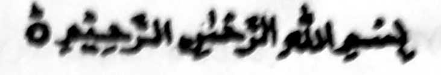
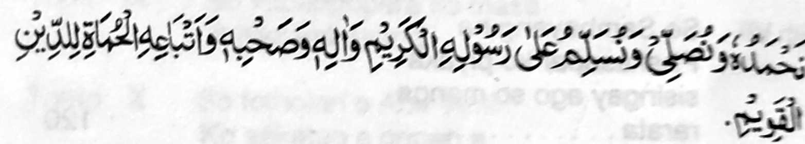
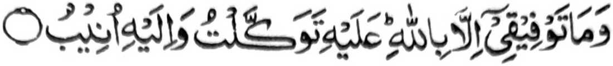
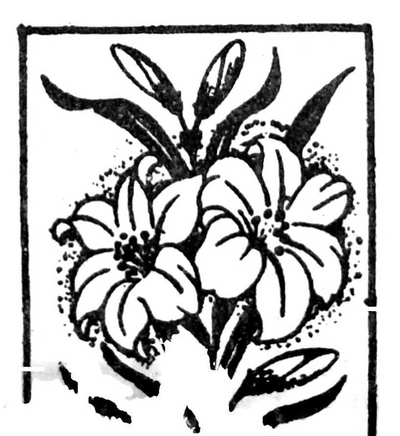

SA INGARAN O ALLAH, LEBI A MASALINGGAGAO
LEBI A MAKALIMOON

“Pephodin tano so Allah go pezalawatan tano so Sogo Iyan a Sesela-an go so manga bolayoka iyan ago so langon o miyonoton si-i ko kiya-awidi ko Agama a ontol.”
So kinindaraynonen o manga Muslim ko kinggolalanen ko Islam na tanto a marayag so katawi ron. Taman sa apiya so Sambayang, a aya miyakalala-i gona a polaos o Islam (ko oriyan o Iman) ago aya pagam-paganay a phagitongen ko Gawi-i a Kaphangokom, na tanto a inindarainon. Minsan pen so pananawag o Islam, sangka iya masa, na lagido o gora-ok sa kalasan, ogaid na so kiyatepengi ron na miya ilay a so kaperomasay a maka-aantap si-i na aden a ini onga niyan.
So manga barabantoga a katharo o Rasulollah (Sallallaho ‘Alaihi wa Sallam) na mata-an a phakang-gay a gona si-i ko manga tao a malantas i sabot ago maonoten i pamikiran. Sabap sangka-iya pamikiran ago onot si-i ko manga pangeni o saba-ad ko manga pemamasela-an a manga ginawa-i aken, na inipaliyogat aken ko ginawa ko a kizoraten aken sangka-iya a bandingan, a ika dowa ini a kitab ko Tabligh, a aya paganay na so Manga Kalbihan o Tabligh.

Na da-a Taufiq aken inonta so pho-on ko Allah si-i ako Rekaniyan zasarakan ago Ron ako pephagapas.
So manga Muslim imanto, ko kinggo-golalanen iran ko Sambayang, na matetelo siran ba-ad:
Biyagi aken angka iya kitab sa telo ba-ad a domada-it ko omani isa sangka iya a manga sagorompong a miya aloy. Si-i ko omani saba-adon na inaloy ron so manga rarayag a Hadith o Rasulollah (Sallallaho ‘Alaihi wa Sallam) rakes o malebod a ma-ana iran. So manga ma-ana iran na piyaka-okit sa maliwanag a basa na da pamantaga so ma-ana o omani kalimah. Igira kailangan na itotondogon so osayan niyan. So manga kitab a Hadith a kinowa-an kiran na tatago-on non a gonana-o.
